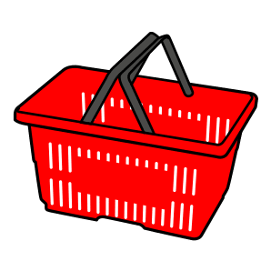
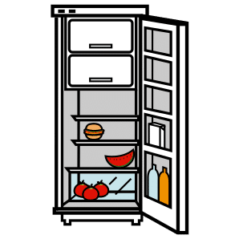

Thématique D · CAP
Fiche de révision D3 — Les achats
Révise en t'amusant, écoute, puis imprime ta fiche
Fais défiler la page : les notions apparaissent une à une. Touche les cartes pour les retourner, touche 🔊 Écouter pour entendre une carte, une question ou une correction, puis réponds aux questions « Je vérifie mes acquis ».
1. Acheter en ligne ou en magasin
Touche une carte pour voir les avantages et les limites.
2. Les critères de choix

Le besoinCe dont la personne a réellement besoin : c'est lui qui guide le choix. Les critèresLe prix total, la qualité, l'usage, le délai, la garantie.
Les critèresLe prix total, la qualité, l'usage, le délai, la garantie.Comparer, c'est mettre côte à côte plusieurs offres sur les mêmes critères. Exemple : site 89,00 + 9,90 = 98,90 €, livré en 5 jours ; magasin 99,00 €, tout de suite.
3. Le délai de rétractation
 14 jours pour changer d'avisPour un achat à distance, l'acheteur a 14 jours pour se rétracter. Pour un bien, le délai commence le lendemain de la livraison. Il envoie un formulaire ou une déclaration, puis renvoie le produit dans les 14 jours. Le vendeur rembourse dans les 14 jours.
14 jours pour changer d'avisPour un achat à distance, l'acheteur a 14 jours pour se rétracter. Pour un bien, le délai commence le lendemain de la livraison. Il envoie un formulaire ou une déclaration, puis renvoie le produit dans les 14 jours. Le vendeur rembourse dans les 14 jours.Exemple du cours : livré le 5 octobre, le délai commence le 6 octobre ; Nathan peut se rétracter jusqu'au 19 octobre.
Ces achats sont faits en ligne. Classe-les.
4. DLC et DDM
Touche chaque carte pour voir ce que veut dire la date.
5. Allergènes et stockage
 Les allergènesLes ingrédients qui peuvent provoquer une allergie sont mis en relief dans la liste des ingrédients. Exemple : LAIT sur l'étiquette du jambon.
Les allergènesLes ingrédients qui peuvent provoquer une allergie sont mis en relief dans la liste des ingrédients. Exemple : LAIT sur l'étiquette du jambon.
Le stockageRespecter la température indiquée. Le jambon : entre 0 °C et 4 °C ; après ouverture, à consommer sous 48 heures. Un aliment frais laissé au chaud peut devenir dangereux avant sa date.6. Les signes officiels et le commerce équitable
Touche chaque carte pour voir ce que le signe garantit.
Ces signes sont contrôlés par les pouvoirs publics. Une marque commerciale ne garantit ni l'origine ni la qualité.
7. Proposer des solutions : acheter de façon raisonnée
 Pour tous les consommateurs (collectif)Des règles protègent : le délai de rétractation de 14 jours pour un achat à distance, les signes officiels contrôlés par les pouvoirs publics.
Pour tous les consommateurs (collectif)Des règles protègent : le délai de rétractation de 14 jours pour un achat à distance, les signes officiels contrôlés par les pouvoirs publics.Pour moi (individuel)Faire une liste selon ses besoins, comparer les prix totaux, lire l'étiquette : date, allergènes, conservation, signes officiels.
Je vérifie mes acquis : 0 / 0